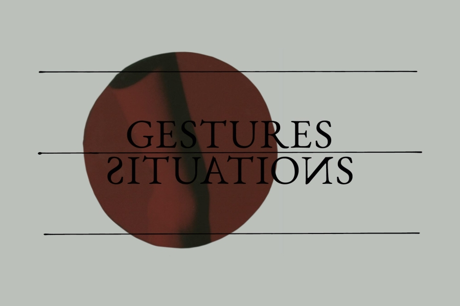

Gestuurid/situatsioonid: ilma partituurita kuulamine. Marianna Liik, Artjom Astrov, Maryn-Liis Rüütelmaa
- Millal
- , 60 min
- Kus
- ECCM saal, Herne 11A, Tallinn
- Korraldaja
- Eesti Nüüdismuusika Keskus, Ulysses

Gestuurid/situatsioonid: ilma partituurita kuulamine on sündinud soovist mõtestada praegust aegruumi ja selle vajadusi ning nihutades lühiaktsioonide žesti keskme heliloominguga seotud kogukonna konteksti. Selle tulemusel kutsub Eesti Nüüdismuusika Keskus igaks aktsiooniks kaks erinevat heliloomingu ja interpretatsiooniga tegelevat professionaalset loojat oma keskusesse ja annab neile vabad käed. Uue komponendina kutsutakse igasse gestuuri/situatsiooni ka kolmas kunstnik mõnest teisest praktikast või loomevaldkonnast, tuues protsessi teistsuguse pagasi, kehalisuse või ruumitaju. Kõikides aktsioonides on osalistele toeks dramaturg Alissa Šnaider. Kahte esimesse aktsiooni kaasatud heliloojad ja etenduskunstnikud on: Marianna Liik, Liisa Hõbepappel, Artjom Astrov, Kenn-Eerik Kannike, Liis Vares ja Maryn-Liis Rüütelmaa.
Avalik žest ei ole valmis teose esitlus ega klassikaline kontsert. See on kümnepäevase protsessi viimane hetk, võimalus olla tunnistajaks olukorrale, mis on tekkinud kolme osaleja koosmõjus ja mida ei saa korrata täpselt samal kujul.
Gestuurid/situatsioonid ei ole koostööformaat, vaid riskantne olukord. See loob situatsioone, kus heli ei ole komponeeritud, vaid tekib selle tagajärjel, et kehad püüavad kooskõlastada oma tegevust ilma kokkuleppeta.
Gestuurid/situatsioonid: kuulamine ilma partituurita pakub välja pigem probleemi kui formaadi.
See loob situatsioone, milles heli ei ole komponeeritud, vaid tekib tagajärjena kehade püüdlustele koordineeruda ilma kokkuleppeta.
Puudub partituur, ühine keel ja kohustus jõuda teoseni.
Projekt on üles ehitatud minimaalsele kolme osaleja kooslusele ning žestide kogumile, mis toimivad üleminekuoperaatoritena.
Neid žeste ei saa korrata ega optimeerida; need tähistavad pigem läve kui tegevusi.
Kuulamist käsitletakse seisundi, mitte oskusena.
Viivitus, arusaamatus, väsimus ja vaikus ei ole katkestused, vaid struktuursed elemendid, mis korraldavad kogu välja.
Olukord käivitatakse ning seejärel lastakse sellel autonoomselt areneda.
Koreograafia ei seisne heli ja liikumise organiseerimises, vaid koordineerimise enese ebastabiilsuses.
Tulemus ei ole etendus, vaid jääk, jälg sellest, et oldi kohal lahendamata probleemi sees.
Gestuurid/situatsioonid: kuulamine ilma partituurita ei püüa muusikat ümber defineerida.
See hoiab muusikalise keele peatatud olekus, et uurida tingimusi, milles heli saab üldse veel aset leida.
Gestuurid/situatsioonid toimib kaasaskantava struktuurina, mitte lokaalse väljendusvormina.
Iga iteratsioon aktiveerib sama probleemi erinevas kontekstis.
Projekt ei tõlgi kultuure, see asetab need surve alla.
5 gestuurist gestuuride/situatsioonideni
Tegemist on edasiarendusega elektron.art kunstisaalis toimunud „5 gestuuri“ aktsioonidele, mille raames kohtusid aastatel 2023 kuni 2025 kunstnike duod: Claudia Lepik, Maxim Mjödov, Sveta Grigorjeva, Mikhail Pashchuk, Raul Keller, Kärt Koppel, Laivi Suurväli, Krõõt Juurak, Marta Vaarik, Gregor Kulla, Jaan Evart, Hendrik Kaljujärv, Riina Maidre, Marto Mägi, Kymbali Williams, Liisamari Viik, Viktoria Martjanova, Maxim Nikanorov, Kitty Florentine, Grete Rattasepp ja Arolin Raudva. Kokku toimus 11 „5 gestuuri“ lühiaktsiooni, nendest viimane koostöös SAAL Biennaal festivaliga. Eelnevatest gestuuridest jäid kõlama küsimused, mis kanduvad edasi eelootavatesse gestuuridesse/situatsioonidesse. Milline žest on võimalik seal, kus vormid on ette määratud ja ressursid piiratud? Milliseid tingimusi on vaja, et võiks sündida midagi uut?
Toimunud aktsioonide põhjal sai selgeks, et sellest on kujunenud püsiv, kuid avatud žestide formaat. Hoitud vorm, mis võib ikka uuesti esile kerkida, kui tekib ruum, vajadus ja kuulaja.
Alissa Šnaider
Alissa Šnaider on kunstnik, koreograaf, dramaturg ja kuraator, kes tegutseb nii etenduskunstide kui visuaalkunsti valdkonnas.
Tema looming hõlmab nii koreograafiat, lavastamist, fotograafiat kui ka kirjutamist. Oma praktikas käsitleb ta žesti mitte pelgalt väljendusvahendina, vaid tegevusena, mis konfigureerib tähelepanu, aja ja kehade vahelisi suhteid. Selle asemel, et luua kindlaid vorme, tekitab ta olukordi, milles kohalolu, viivitus, nihestatus ja haavatavus jäävad aktiivseteks seisunditeks.
Alissa on aktsioonidesarja „Gestuurid/situatsioonid“ algataja ning käesoleva versiooni puhul on tegemist algse gestuuride formaadi edasiarendusega, mille raames luuakse performatiivseid olukordi, mille keskmes on risk, mittekoordineeritud olek ja kuulamine. Projekt toimib teisaldatava struktuurina, mida aktiveerivad erinevad osalejate kooslused ja nende kontekstispetsiifilised žestid.
Tema visuaalne looming laiendab neid olukordi, käsitledes pilte pigem tegevuse jäägina kui kujutistena. Kirjutamine toimib tema loomingus väljendus- ja sekkumisvahendina, saates protsesse ilma neid stabiliseerimata.
Ta tegutseb rahvusvaheliselt nii kunsti-, kuraatori- kui ka dramaturgilistes kontekstides. snaider.ee
Tegijad
- Kunstnikud
- Marianna Liik, Liisa Hõbepappel, Artjom Astrov, Kenn-Eerik Kannike, Liis Vares, Maryn-Liis Rüütelmaa
- Dramaturg
- Alissa Šnaider
- Graafiline disain
- Jaan Evart
- Loovkommunikatsioon
- Maria Solei Järvet
- Kaasprodutsent
- Maria Hansar, Eesti Nüüdismuusika Keskus
- Projektijuht
- Annika Üprus
- Toetajad
- Eesti Kultuurkapital, Tallinna linn, Ulysses platvorm
Kaasrahastatud Euroopa Liidu poolt. Avaldatud seisukohad ja arvamused on ainult autorite omad ega pruugi kajastada Euroopa Liidu või Euroopa Hariduse ja Kultuuri Rakendusameti (EACEA) seisukohti ja arvamusi. Euroopa Liit ega EACEA nende eest ei vastuta.